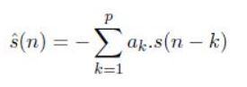
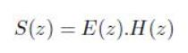
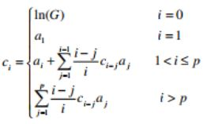
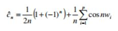
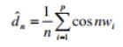
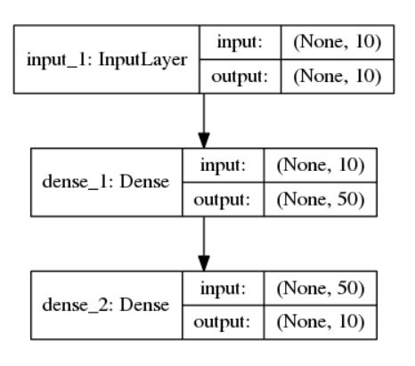
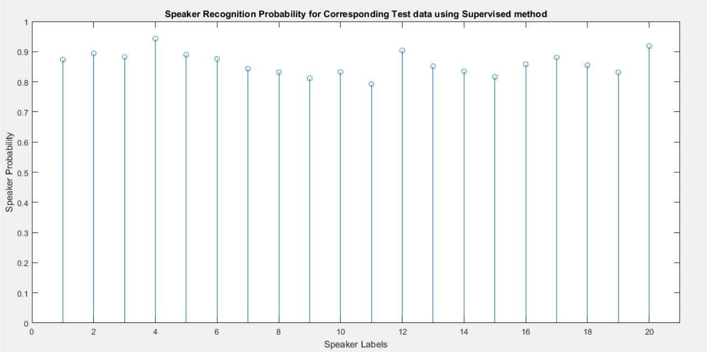
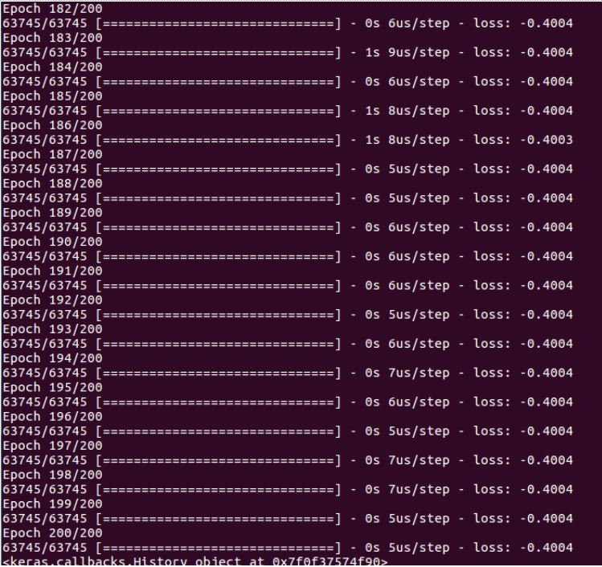

Abstract
Speaker Sequence Segmentation is the first step in many audio-processing applications and aims to solve the problem ”who spoke when”. It therefore relies on efficient use of temporal information from extracted audio features. In this project, we have utilised the Linear Predictive Coefficients of the speech signal and it’s derived features to segment out the speech of individual speakers. We have employed both supervised and unsupervised learning methods to approach the problem.
1. Introduction
1.1 Introduction to Problem
The objective of this project is to segment speech sequences based on speaker transitions, where the number of speakers is not known beforehand.
1.2 Motivation
The number of smart devices are increasing exponentially and so is the amount of data to process. Audio indexing which aims to organize content of multimedia using semantic information from audio data is broader class of problem for audio processing. Speech sequence segmentation aims to label the segments of audio/video data with corresponding speaker identities. Apart from audio indexing it has central application in speech research such as automatic speech recognition, rich transcription etc.
1.3 Figure
1.4 Literature Review
The general unsupervised segmentation problem deals with the classification of a given utterance to a speaker participating in a multispeaker conversation. The exact definition of the problem is as follows. given a speech signal, recorded from a multi-speaker conversation, determine the number of speakers, determine the transition times between speakers and assign each speech segment to its speaker.
-
Miro, Xavier Anguera, et al. ”Speaker diarization: A review of recent research.” Audio, Speech, and Language Processing, IEEE Transactions on 20.2 (2012): 356-370 discusses two approach, top-down and bottom-up approach. The top-down approach is initialized with very few clusters (usually one) whereas the bottom-up approach is initialized with many clusters (usually more clusters than expected speakers). In both cases the aim is to iteratively converge towards an optimum number of clusters. If the final number is higher than the optimum then the system is said to under-cluster.
-
Qin Jin, Kornel Laskowski, Tanja Schultz, and Alex Waibel, ”Speaker Segmentation and Clustering In meetings” uses BIC ( Bayesian Information Criterion) to calculate the performance of different model. A negative value of BIC means that model provides a better fit to the data, that is there is a speaker change at point . Therefore, we continue merging segments until the value of BIC for the two closest segments is negative.
-
Aadel Alatwi, Stephen So, Kuldip K. Paliwal “Perceptually Motivated Linear Prediction Cepstral Features for Network Speech Recognition” proposed a new method for modifying the power spectrum of input speech to obtain a set of perceptually motivated Linear Prediction (LP) parameters that provide noise-robustness to Automatic Speech Recognition (ASR) features
-
Vladimir Fabregas et al, “Transformations of LPC and LSF Parameters to Speech Recognition Features” discusses features that can be obtained from the LPC parameters are the LPCC (LPC Cepstrum) and the MLPCC (Mel-Frequency LPCC).
1.5 Proposed Approach
The problem requires that we split the input audio into multiple segments according to the speaker transitions. For this purpose, we need to characterise each individual’s voice by some features, using which we can detect if there is a speaker transition. For this purpose, we are using LPC and it’s derived features. The pre-processing of the audio clip involves detecting and discarding the parts of audio clip that don’t contain any voice, i.e. all speakers are silent. Further, we engage in feature extraction. The extracted features are used for the purpose of classification using two methods - supervised and unsupervised. The post-processing involves eliminating the sporadic values/samples detected over each of the larger time frame.
2. Proposed Approach
The process of speech sequence segmenting comprises of the following steps:
-
Splitting audio into frames - The complete audio is divided into smaller time frames of 20ms each with a hop of 10ms. This is done because in smaller time scales audio signals are statistically unchanged.
-
Voice Activity Detection - Voice activity detection (VAD), also known as speech activity detection or speech detection, is a technique used in speech processing in which the presence or absence of human speech is detected. This was performed on each of the 20ms time frames and the time frames in which speech is not detected were discarded.
-
Feature Extraction - Linear Predictive Coefficients (LPCs) are widely used features in automatic speech sequence segmenting. The redundancy in the speech signal is exploited in the LP analysis. The prediction of current sample as a linear combination of past p samples form the basis of linear prediction analysis where p is the order of prediction. The predicted sample s^(n) can be represented as follows,
 Various LPC-derived features such as pitch, formants, Linear Predictive Cepstral Coefficients (LPCC), Line Spectral Frequencies (LSF), Pseudo-Cepstral Coefficients (PCC), Pseudo-Cepstrum (PCEP) were included in the feature vector extracted. LP analysis separates the given short term sequence of speech into its slowly varying vocal tract component represented by LP filter (H(z)) and fast varying excitation component given by the LP residual (e(n)). The LP filter (H(z)) induces the desired spectral shape for the shape on the flat spectrum (E(z)) of the noise like excitation sequence as given in equation (20). As the LP spectrum provides the vocal-tract characteristics, the vocal-tract resonances (formants) can be estimated from the LP spectrum. Various formant locations can be obtained by picking the peaks from the magnitude LP spectrum (|H(z)|).  The extraction process of the LPCC features from the LPC coefficients is formulated in the z -transform domain, using the complex logarithm of the LPC system transfer function, which is analogous to the cepstrum computation from the discrete Fourier transform of the speech signal. The i-th LPCC parameter is given by the following recursive equation  where ai is the i-th LPC parameter, p is the LPC system order and G is the gain factor of the system. The PCC is computed directly from the LSFs. However, its derivation is based on the LPCC. Mathematical manipulations and approximations allow it to be expressed in terms of the LSFs. The n-th PCC is given by the equation  where wi is the i -th LSF parameter. The n-th PCEP expression is given by  It is fair to expect a good spectral performance of the PCEP because they provide a spectral envelope very similar to the one provided by the Cepstrum, which is generated from the original speech signal.
These features were normalised and cumulated to form a feature vector of length 63.Feature Used Number of components of each feature used to compose the feature vector Pitch 1 Formants 2 Linear Predictive Coefficients (LPCs) 20 Linear Predictive Cepstral Coefficients (LPCC) 10 Line Spectral Frequencies (LSF) 10 Pseudo-Cepstral Coefficients (PCC) 10 Pseudo-Cepstrum (PCEP) 10 -
Speech Segmentation based on speakers - The speech segmentation was performed separately using the following two methods -
-
Supervised Approach - The k-nearest neighbours (kNN) model was trained on a large numbers of voice samples to incorporate total variability in feature space. Hence, parameters of the model were set accordingly to classify individual speakers. This model was applied on a test data to cluster the 20ms time frames pertaining to individual speakers. For every 1 sec (50 time frames of 20ms each), the mode of the data was found and assigned to the whole 1 sec time frame. In order to eliminate the sporadic predictions, we have used a window function which passes through each time frame and computes the mode of elements left of the considered time-frame as well as the right side. If it does not match with the class predicted by the considered time-frame, it is assigned the mode computed. Hence, we were able to predict the transitions in the complete audio samples and segment out the speech of each individual speaker.
-
Unsupervised Approach - The feature vectors pertaining to each time-frame were passed through stack of 4 sparse auto-encoders to carry out feature transfer learning. Gaussian Mixture Model was applied to cluster the output into 20 components. A graph was plotted depicting the predicted class at each time-frame. We could observe a change in distribution in the clusters at the speaker transition points. The time instances where such a change occurs across a significant number of clusters were recorded and marked as the transition points. This effectively predicts the transitions in the complete audio samples and segments out the speech of each individual speaker.

-
3. Experiments & Results
3.1 Dataset Description
Firstly, we acquired youtube videos of various lecturers from nptel channel. Later we extracted the audio signal from the videos at a sampling rate of 8000 Hz. In order to generate an audio signal comprising of variable number of speakers of varied durations we concatenated the audio signals in such a way as to create various experimental test cases. Link: Audio Dataset
Supervised:
The probability that the model assigns the rightful class to a 20ms time-frame is shown in the plot below:

Unsupervised:
The features vectors of five speakers was passed through four stacked sparse autoencoders with ReLU as activation function. The output of the autoencoder was then modelled using Gaussian Mixture Model with no. of clusters set to 20. Decoded Value are the output of the sparse autoencoders.

Consecutive segments were taken of the order 1000 and total number of each type of clusters was calculated in them. The above graph plots the number of occurence of cluster X per 1000 segments. Each feature was then given
a binary code depending on the relative occurrence of different gaussian model. The difference in bits of these binary code does not vary significantly for a particular speaker. On the contrary, the no of bit change is
high when there is speaker transition. These binary codes can thus be used for detecting speaker transition as well as speaker identification.
1st Dataset: 5 unique speakers with each speaker having equal speaking time.
2nd Dataset: 5 unique speakers with duration of each speaker increasing progressively.
3rd Dataset: 5 unique speakers with each speaker having equal speaking time and after half of the signal the sequence of speakers repeat.

4th Dataset: 5 unique speakers with each speaker having variable duration.
4. Conclusion
4.1 Summary
The overall aim of this project was to segment speech sequences based on speaker transitions, where the number of speakers is not known beforehand. We have achieved doing this firstly using the supervised approach wherein we had the data of the speakers involved in the conversation beforehand. Secondly, the unsupervised approach implemented rarely failed to detect the speaker transitions.
4.2 Feature Extension
Further improvement can be done to improve robustness to noise and non-speech audio such as music. Furthermore, advance speaker diarization should be able to handle presence of overlapped speech on which the occurrence of overlapping speech almost regularly presents in natural conversation.
4.3 Applications
- One of the most important application will be in transcription of conversation. It can be used to localise the instances of speaker instances to pool data for model training which in turn improve transcription accuracy.
- It can be used to crop the speech of a specific person of interest from a long audio clip.